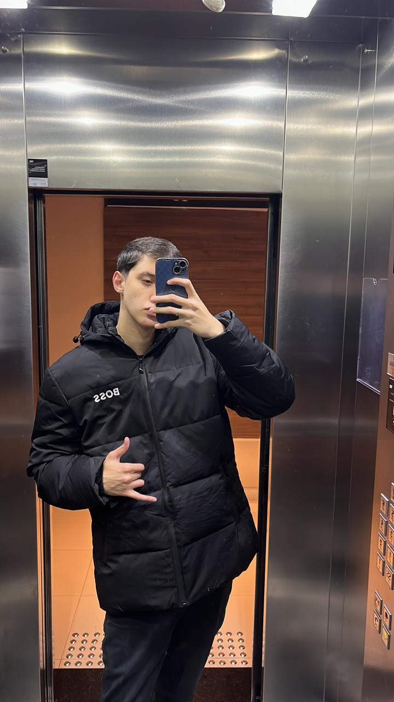

Bem Vindo ao Meu Portfólio
Esse é meu Portfólio do 3° ano, aqui você encontra atividades que eu fiz nesses meus três ano de Senai e meu currículo.
Carta de Apresentação
Meu nome é Victor, mais conhecido como Vg, tenho 17 anos, nasci em Florianópolis. No meu tempo livre gosto de: jogar, dormir, sair com os amigos, jogar futebol, ler e estudar, pretendo ser jogador de futebol no futuro, escolhi a escola S por indicações de amigos. No meu futuro penso em fazer uma faculdade de Jornalismo ou Educação Física.
